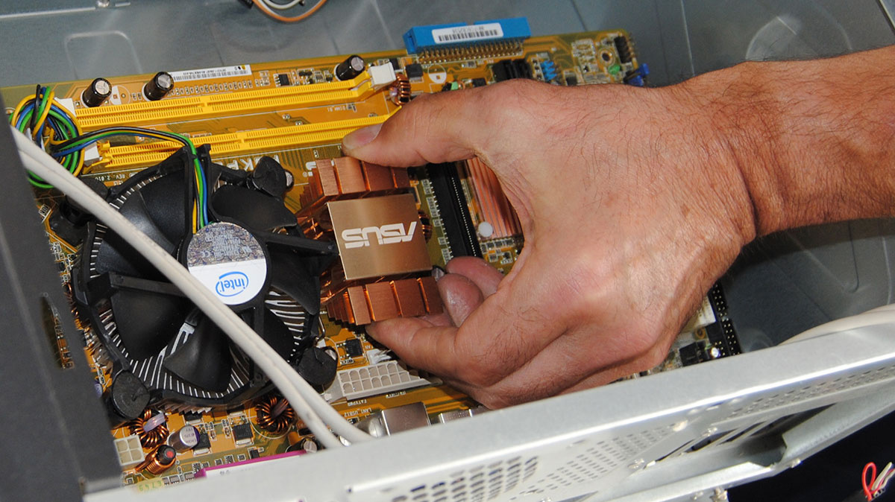

Scheda madre
Una scheda madre in elettronica e informatica, è un tipo di scheda elettronica principale, raccoglie in sé tutta la circuiteria elettronica e i collegamenti di interfaccia tra i vari componenti interni principali di un personal computer come memoria e le altre schede elettroniche montate o alloggiate sopra, comprendendo anche i bus di espansione e le interfacce verso le periferiche esterne.
piazzare la scheda madre nel posizione prestabilita nel case
(clicca qui per vedere i prezzi)